VAMP
- Unreal Engine 5, VR
- Revived a 1987 Sega arcade motorcycle machine with a modern VR twist
- Participants in the Sony USC ETC Transmedia Challenge
- Awarded Best Immersive Software & Hardware
- 01Pitched concept of reviving an old arcade motorcycle machine with VR for Sony USC ETC Transmedia Challenge
- 02Co-Engineered solution to parse voltage signals from arcade controller using Arduino, integrated with Unreal Engine
- 03Designed levels with OutRun and Synthwave aesthetics
- 04Programmed motorcycle mechanics using Unreal Engine Blueprints
Pitch and Visual Aesthetic
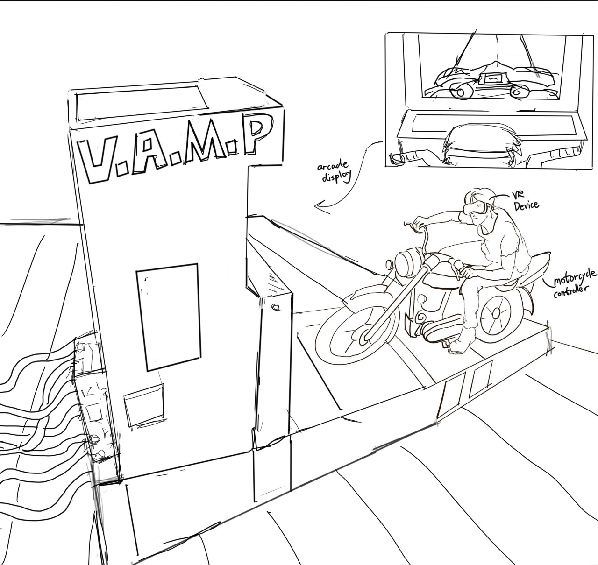
The project began with reviving a classic arcade motorcycle game by integrating VR technology to create a retro-futuristic experience. Pitched this concept to Sony and USC through sketches and mood boards. Inspired by 80s and 90s neon retro aesthetics, designed visuals establishing vibrant, immersive atmosphere including environments, UI elements, and overall look and feel.
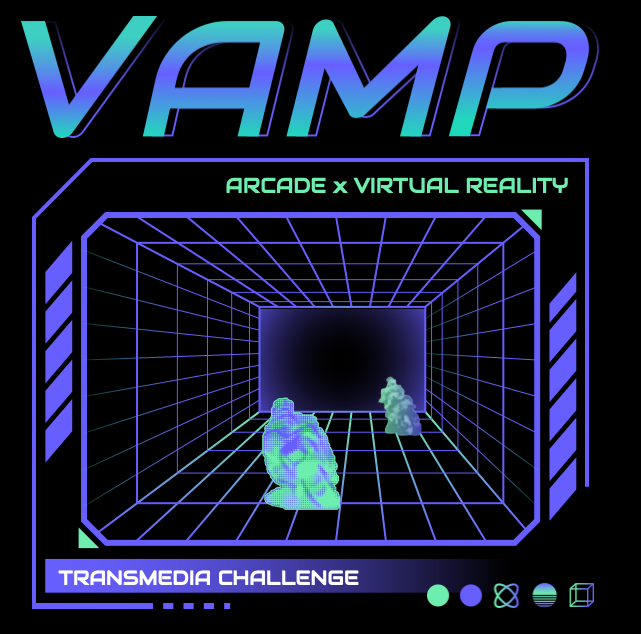
Hardware Integration
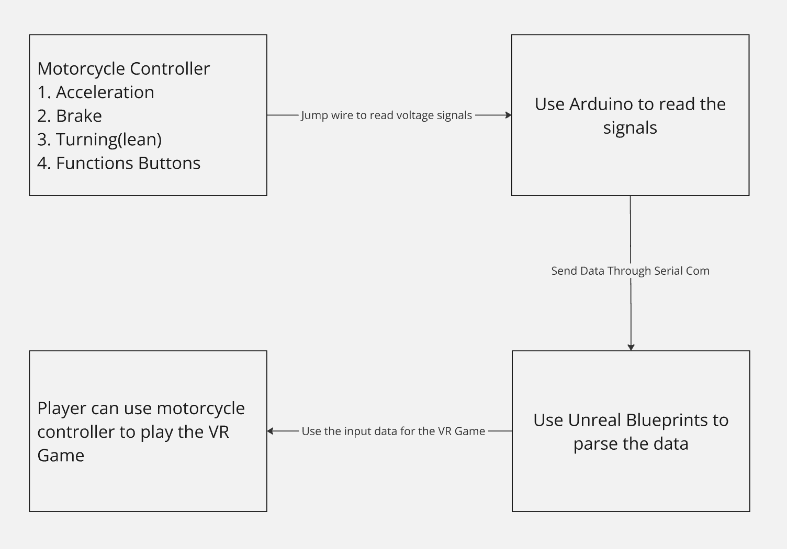
System Overview
Outlines entire process from arcade motorcycle controller to computer interface to VR gameplay.
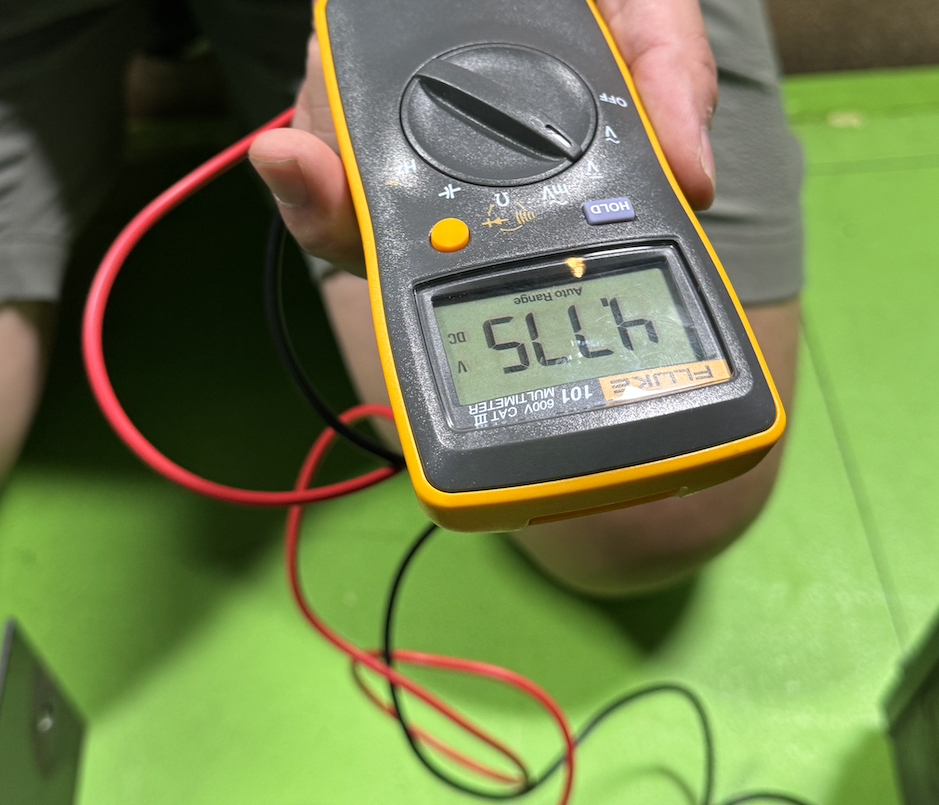
Multimeter Testing and Jump-Wiring: Verified voltage outputs from motorcycle controller wires using multimeter and established jump-wire connections.
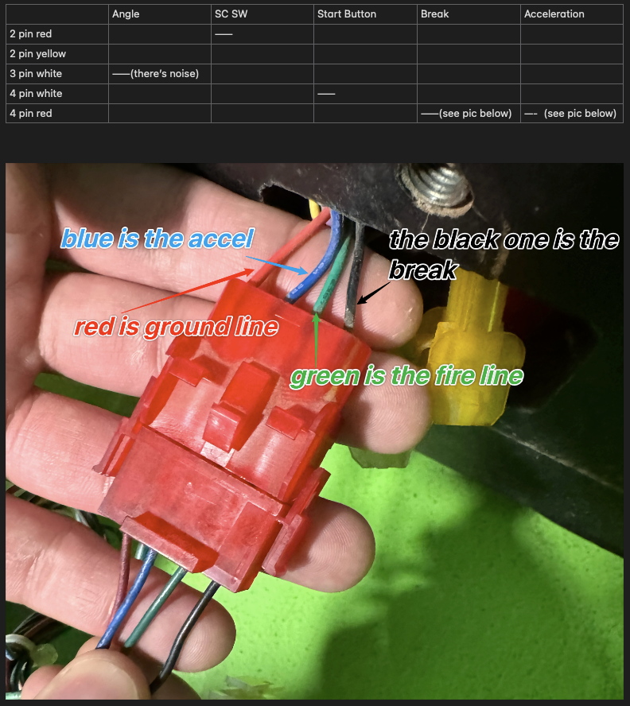
Wire Identification: Identified which wires correspond to throttle, brake, steering to ensure accurate signal mapping.

Arduino Signal Parsing: Arduino reads and interprets controller voltage changes into processable data. Transmits data via serial communication, bridging hardware and Unreal Engine environment for integrated VR gameplay.

Gameplay and Level Design
Combined city and highway sections providing balance between urban density and open-road freedom for varied player experiences.
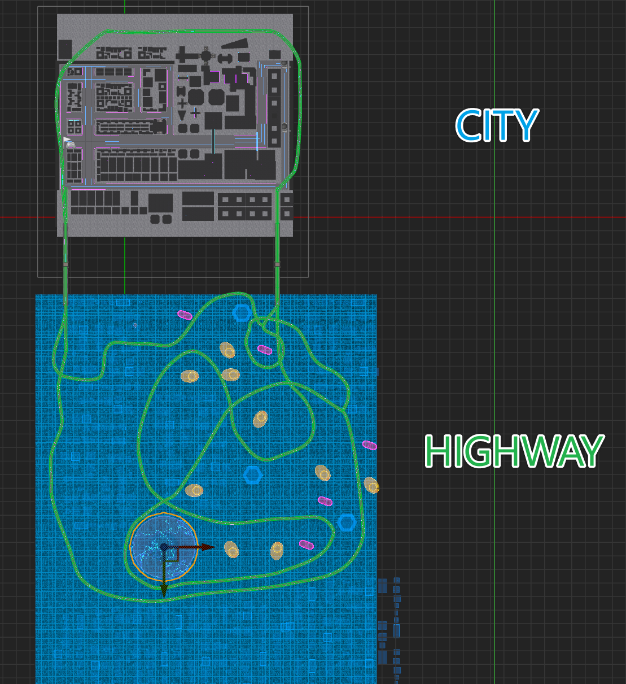
Level Layout Overview

City Environment Gameplay
Players navigate through a neon-lit metropolis filled with tight turns, glowing signage, and a bustling street ambiance. The city level demands precision and control at moderate speeds.

Highway Environment Gameplay
In contrast, the highway section features broad lanes and high-speed stretches, inviting players to accelerate and test their maneuverability in a more open environment.
Motorcycle Mechanics (Blueprints)
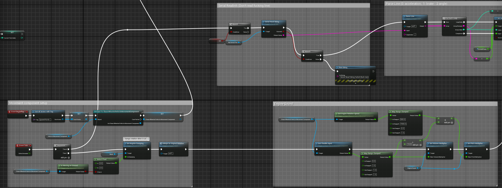
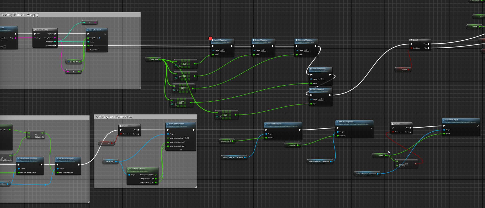
Serial Data Integration: Raw input from the Arduino is captured via serial communication and stored within Unreal Engine. By reading the voltage data sent over serial, the system translates physical controller actions into in-game events.
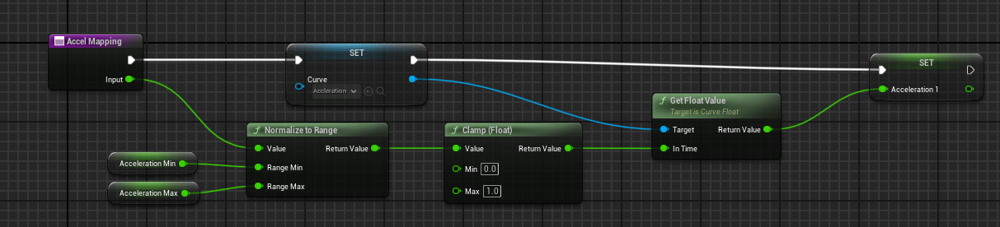
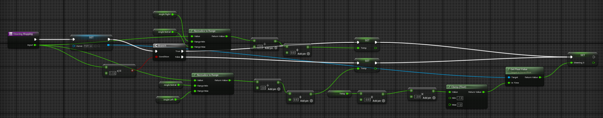
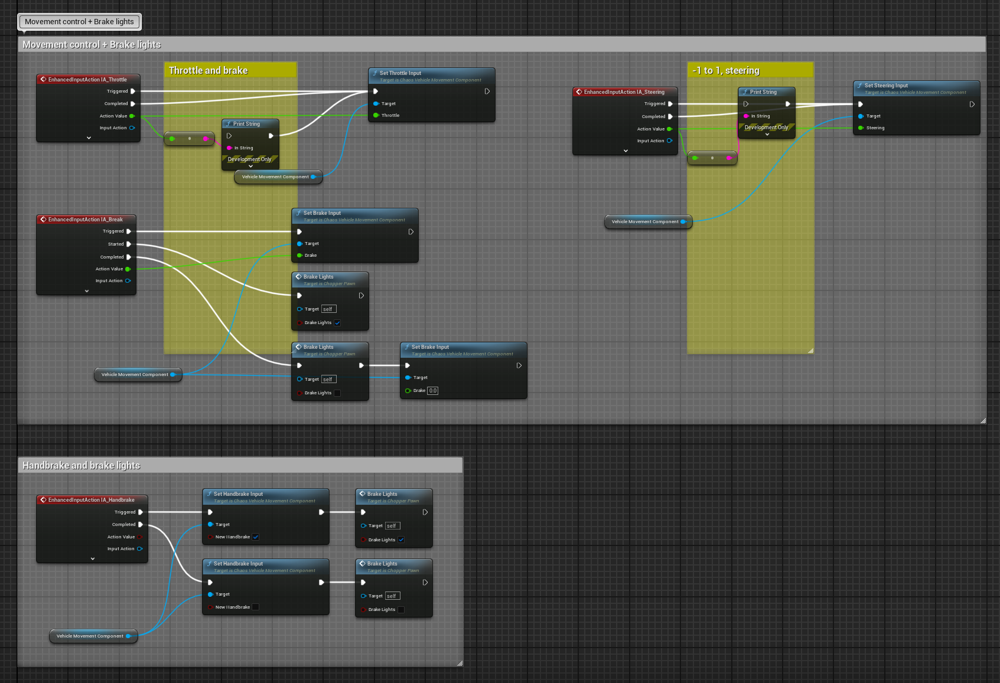
Movement Control + Brake Lights
Applying Inputs to the Chaos Vehicle: The processed controller inputs are fed into Unreal Engine's Chaos Vehicle system, governing the motorcycle's throttle, steering, and braking in real time.
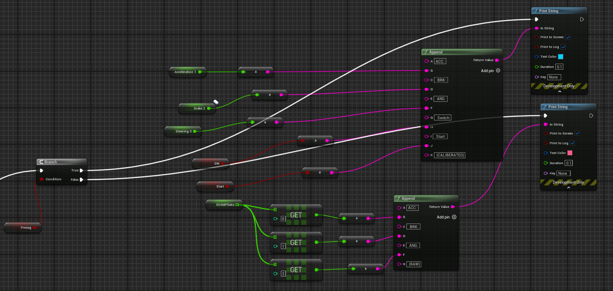
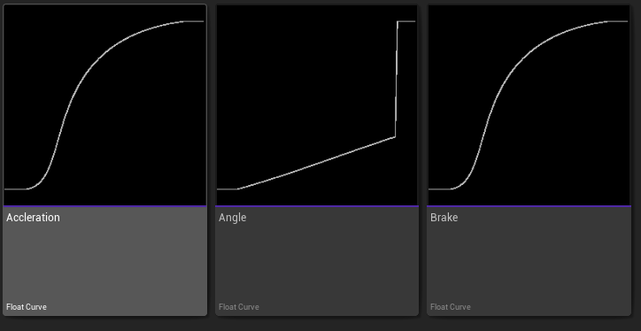
Debugging and Calibration Tools
Various debug overlays and code snippets illustrate how we compensate for controller dead zones and unstable voltage readings, ensuring smooth and reliable gameplay.